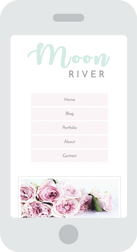
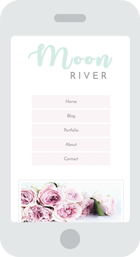

Freelancing is HARD. Starting a business, making a name for yourself, finding clients, keeping those clients, it's all tough stuff! The clients who find me on social media or recommended through friends are usually polite and lovely to work with. Maybe I just have great friends but the rest of the freelancing world is a rough place to adventure.
I have tried several freelancing websites, only to be low-balled, sent inappropriate messages (ladies, you know what I mean), or contacted by scammers. I am a good designer! Yes, I am young and just starting out, but I make awesome designs and I know it. I'm such a catch, right?
I was scimming through a design Reddit thread when I saw some designers talking about a site called Toptal. The thread was started when a designer was complaining about the exact same behavior I had experienced with freelance websites. I was not the only one! Good and experienced designers also deal with that nonsense. Their recommendation? A site called Toptal. Only the best of the business are allowed in. The selection process is tough, but once you're in, you have access to some amazing clients, even big names! I knew right away I wanted to be be a part of something great like Toptal.
I'm specifically trying to get into the Toptal Freelance UI Designers Network. I am inspired by their beautiful, user-friendly designs. I would love the chance to make some myself. Fingers crossed they believe in a new but enthusiastic designer who wants to break out into the freelancing world!
For as long as I can remember, I have loved beautiful things. My clothes, my room, my desk, my website, ALL THE THINGS must be beautiful and perfect. And I get frustrated when they are not. Part of the process of creating something beautiful is first starting with the desire to make something great. It might sound obvious, but it is this goal that will push you through to the next stage: deciding and planning. And this is where I too often get stuck.
A crucial process of design is the limbo between your vision and your creation that is currently coming up short. You KNOW good design, you KNOW how you want that product to look and feel, but you just can't get it there. This is too often where we give up. "It's too hard." " It's not perfect." "It doesn't look like other [insert talented people's] work." When I get stuck here, I look for inspiration. And then tear that inspiration apart piece by piece.
That sounded violent. Really it's starting with something I love and then figuring out EXACTLY what it is that I love about this piece. Is it the font? Is it the colors? Is it the layout? This thought process humanizes that beautiful piece you thought was soooo perfect at first glance. It's really not as perfect as it seems. It's great, yes. But not perfect. And you can recreate that look once you know what you're looking for.
First step? FIND THE INSPIRATION. Check out my PROJECTS page for a live search of Flickr's huge wealth of photos. Try search entries that are similar to the website that you want to recreate, followed by the word "website" or "template". Try "coffee shop website", or "portfolio template" and check out all the amazing ideas. Or just search for pictures of snails or sloths like I did. What? Snails are adorable!
How did I add this to my page? I used this amazing tool called AJAX along with Flickr's API and a search feature. AJAX is an asynchronous javascript power machine. In other words, I can have the browser load SOMETHING, either from my source files or from another location on the web, parse it from XML into JavaScript using JSONP, and add it to my webpage WITHOUT THE BROWSER RELOADING. Neato.
AJAX also makes working with APIs super easy. All you have to do is set up JSON, provide the link, connect it to your search features using jQuery aaaand Voila! You have a working API. That is only a small look into the amazing powers of AJAX. More to come. Happy Monday!
I LOVE creating blog templates for clients. Give me all the pretty stock photos and dreamy colors! This template was designed with a modern client in mind, someone who loves white space and soft, pretty colors. Brb, going to cover my desk in pink roses now.
All of my designs are completely responsive. That means they look fantastic on ALL devices. Yes fam, all. That includes the iPhone OG all the way up to giant desktop displays and even TVs.
Want a personalized blog or portfolio like this one? Shoot me an email with your dream idea and we can talk details.
Happy Thursday!

 
